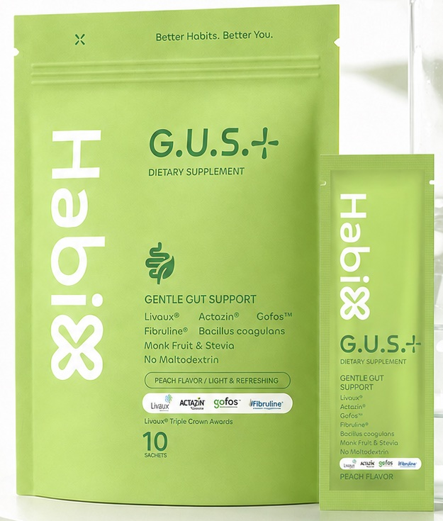
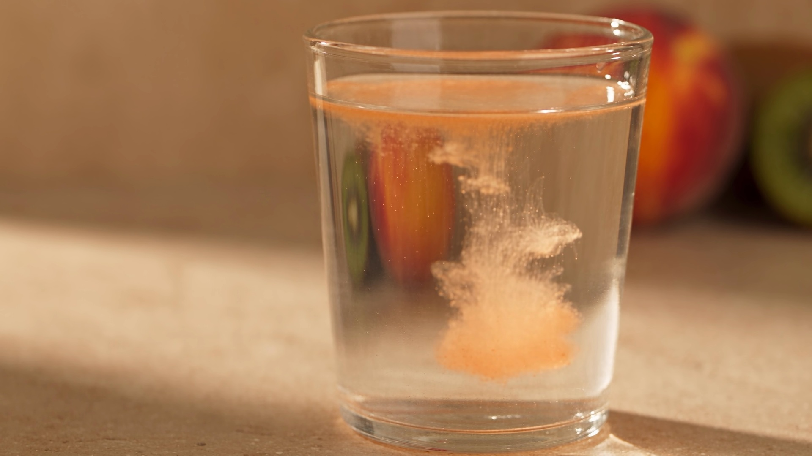

A / ABSORB · เริ่มจากมื้อของคุณ
คุณกินอิ่มแล้วแล้วข้างในล่ะ?
ลองตามอาหารมื้อนี้ เข้าไปดูว่า
ร่างกายและจุลินทรีย์ได้รับอะไรบ้าง
ปกติคุณกินผักแบบไหน?
เลือกข้อที่ใกล้กับคุณ หรือเลื่อนต่อได้เลย
จากอาหารในจานสู่ส่วนเล็ก ๆข้างใน
เราจะค่อย ๆ เปลี่ยนภาพอาหาร เป็นเม็ดและเส้น เพื่อพาคุณตามเข้าไปดูข้างใน
ภาพอธิบายแนวคิด ย่อทั้งขนาดและเวลา
เส้นสีทองนี้คือใยอาหาร
เม็ดต่าง ๆแทนส่วนประกอบจากอาหาร รวมถึงสารอาหารที่ร่างกายนำไปใช้
เส้นสีทองแทนใยอาหาร ส่วนที่เราจะตามไปดูต่อ
สีและรูปร่างใช้ช่วยเล่าเรื่อง ไม่ใช่ภาพจริงของสารอาหาร
สารอาหารหลายชนิดถูกย่อยและดูดซึมไปก่อน
แต่ใยอาหารบางส่วนไม่ถูกย่อยในลำไส้เล็ก จึงเดินทางต่อไปถึงจุลินทรีย์ในลำไส้ใหญ่
สุขภาพลำไส้ไม่ได้มีแค่วันนี้ถ่ายหรือยัง
คำถามที่กว้างกว่า: ใครอยู่ในนั้น และพวกเขากินอะไร?
GUT MICROBIOME
คุณไม่ได้อยู่ตัวคนเดียว
ลำไส้ใหญ่เป็นบ้านของจุลินทรีย์จำนวนมหาศาล เรียกรวมกันว่า ไมโครไบโอม
คนละคำคนละบทบาท
- โพรไบโอติก
- จุลินทรีย์มีชีวิตที่ให้ประโยชน์ เมื่อได้รับในปริมาณที่เหมาะสม
- พรีไบโอติก
- อาหารที่จุลินทรีย์บางกลุ่มใช้ แล้วเกิดประโยชน์ต่อร่างกาย
คำนิยามอย่างเป็นทางการ
พรีไบโอติก ต้องถูกจุลินทรีย์ของร่างกายนำไปใช้อย่างเฉพาะเจาะจง และมีประโยชน์ต่อสุขภาพที่แสดงให้เห็นได้ ไม่ใช่แค่ถูกหมักได้ (ISAPP, 2017)
โพรไบโอติก คือจุลินทรีย์ที่มีชีวิต ผลต่างกันไปตามชนิดและบริบท (NCCIH)
ใยอาหารทุกชนิดไม่ได้เป็นพรีไบโอติกทั้งหมด
อาหารหลากหลายยังเป็นจุดเริ่มต้น
- หัวหอม
- กระเทียม
- กล้วย
- ธัญพืช
- ถั่วบางชนิด
- หน่อไม้ฝรั่ง
อาหารที่หลากหลายให้ประโยชน์หลายด้าน พรีไบโอติกเป็นเพียงหนึ่งส่วนในนั้น
เส้นใยบางส่วนที่เราไม่ย่อย
ดูดซึมสารอาหารส่วนใหญ่ลำไส้ใหญ่
จุลินทรีย์อาศัยอยู่มาก
จุลินทรีย์ในลำไส้ใหญ่ใช้ประโยชน์
พวกมันใช้ใยอาหารเหล่านี้เป็นแหล่งพลังงาน กระบวนการนี้เรียกว่า การหมัก
เกิดสารจากการหมัก
เช่น กรดไขมันสายสั้น (SCFAs) อย่างอะซีเตต โพรพิโอเนต และบิวทิเรต
ภาพอธิบายแนวคิด ไม่ใช่ภาพผลลัพธ์ของผลิตภัณฑ์
เรื่องของลำไส้จึงกว้างกว่าการขับถ่าย
แนวคิดสูตรจาก HabiX
จากความเข้าใจนี้สู่แนวคิดของG.U.S.+
สามเส้นใยสามลักษณะ
- GOFOS™ (sc-FOS)หมักเร็ว
- PHGGค่อยเป็นค่อยไป
- Fibruline® (อินูลิน)ปานกลางถึงช้า
ลักษณะการหมักตามคำอธิบายสูตรของแบรนด์
เป็นกีวีเหมือนกันแต่เลือกมาคนละเหตุผล
- กีวีทอง · มุมจุลินทรีย์
- Livaux® ส่วนผสมจากผลไม้ทั้งลูก แบรนด์เล่าในมุมของจุลินทรีย์ในลำไส้
- กีวีเขียว · มุมการย่อย
- Actazin® ส่วนผสมจากผลไม้ทั้งลูก แบรนด์เล่าในมุมการย่อยและการเคลื่อนไหวของลำไส้
เลือกสิ่งที่จะใส่คิดถึงสิ่งที่อยากดื่มต่อ
ความหวานจาก Monk Fruit & Stevia แบรนด์ระบุ No Maltodextrin
อ่านจากซองเอง

ตามที่ปรากฏบนซอง: Livaux® · Actazin® · Gofos™ · Fibruline® · Bacillus coagulans · Monk Fruit & Stevia · No Maltodextrin · Peach flavor
ปริมาณและรายละเอียด ให้ดูจากฉลากจริง
จากเรื่องข้างในสู่แก้วที่อยู่ในวันของคุณ
รสพีช

- 1ฉีก 1 ซอง
- 2ผสมน้ำ คนให้ละลาย
- 3ดื่ม
ชงกับน้ำ 150 มล. • ชอบรสอ่อนลง ใช้น้ำ 250–300 มล.
วิธีชงและหมายเหตุ
ตัวเลข 250–300 มล. คือปริมาณน้ำรวมทั้งหมด ไม่ใช่เติมเพิ่มจาก 150 มล.
บางคนชอบทำเป็นรูทีนช่วงค่ำ สื่อของแบรนด์ไม่ได้กำหนดเวลา เลือกช่วงที่ทำต่อได้ง่ายที่สุด
ภาพแก้วเป็นภาพประกอบ ไม่ใช่การทดลองความเร็วการละลายหรือสีเครื่องดื่มจริง
ก่อนเลือกขอให้ตรงกับคุณ
ดีแล้ว อาหารจริงคือจุดเริ่มต้นที่ดีเสมอ ผักแต่ละชนิดมีใยอาหารไม่เหมือนกัน และไม่ใช่ทุกชนิดเป็นพรีไบโอติก ถ้าจานของคุณมีหอม กระเทียม กล้วย ถั่ว ธัญพืช อยู่เป็นประจำ คุณอาจไม่ต้องรีบหาอะไรเพิ่ม
เป็นรสพีช และชงกับน้ำ 250–300 มล. ได้ถ้าอยากให้รสอ่อนลง และสอบถามเรื่องการลองชิมได้
อย่าดูจากชื่อสารเด่นตัวเดียว ลองอ่านรายการส่วนประกอบทั้งหมด ปริมาณ ชนิดของสารให้ความหวาน และความเหมาะกับร่างกายคุณเอง
ไม่ต้อง ขึ้นอยู่กับอาหารและความต้องการของแต่ละคน หากมีโรคประจำตัวหรือกำลังรักษาอยู่ ควรปรึกษาแพทย์ก่อน
ขอราคาปัจจุบัน จำนวนซอง และเงื่อนไขก่อนตัดสินใจ
เริ่มด้วยข้อมูลที่ชัดและวิธีที่ทำต่อได้
เริ่มจากสิ่งที่เข้ากับมื้ออาหารและวันของคุณ แล้วค่อยสังเกตว่าทำต่อได้ไหม
ช่องทางคือ LINE บ้าน myClover ไม่มีการสั่งซื้อบนหน้านี้
ROUTINEX
นี่คือห้อง A
เริ่มจากการเข้าใจว่าอาหารเดินทางไปไหน ห้องต่อไปจะพาไปดูเรื่องอื่นของร่างกายและวันธรรมดา
- AAbsorbห้องนี้
- BBuildเข้าห้อง B →
- CControlเร็ว ๆ นี้
- D—เร็ว ๆ นี้
ผลิตภัณฑ์เสริมอาหาร ไม่ใช่ยา • อ่านฉลากก่อนใช้ · “Absorb” เป็นชื่อห้องของโปรเจกต์ ไม่ใช่คำกล่าวอ้างว่าผลิตภัณฑ์ใดเพิ่มการดูดซึม